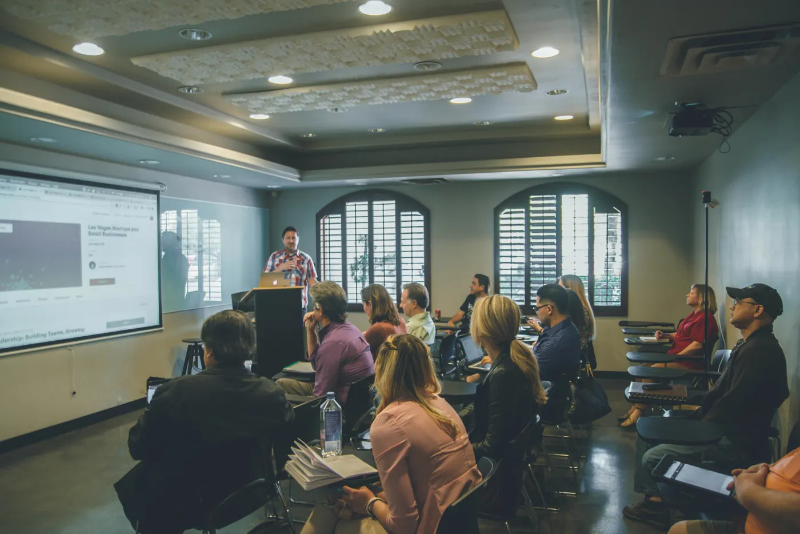

Teaching
- 2019 to 2021Physics and ICT TeacherIELEV German Private College, Turkey
- 2015 to 2017System Admin and ICT TeacherParadise High School, Papua New Guinea
TAE40122 Teacher Professional Portfolio
IT support professional, training to teach IT in the VET sector.
From the service desk
to the classroom.
VET career profile
IT support professional with over 5 years of experience across government, education, retail and corporate environments, with deep hands-on experience in Microsoft technologies. Skilled in Level 1–2 service desk support, device deployment and asset management. Holds a Certificate IV in Cyber Security and uses AI tools effectively, with strong prompt engineering skills. Explaining technology to people who are not technical has been part of every job I have had. Now I am training to teach it.
Technical skills
Experience
What I can teach
From my Vocational Competency Matrix: the industry areas where my current skills support the training I want to deliver.
Help desk, Windows, macOS, ChromeOS and mobile devices, Active Directory, Entra ID, Microsoft 365, ticketing and onboarding.
Endpoint and email security, phishing checks, patching, log analysis and cyber safety for staff and students.
TCP/IP, DNS, DHCP, VLANs, Wi-Fi, Intune and device rollouts at scale.
Everyday office technology: Outlook, Excel, mail merge, password managers and safe online work.
Qualifications
My TAE journey
This portfolio collects the work I produced, the feedback I received and what I learned in each cluster of my Certificate IV in Training and Assessment at Box Hill Institute.
